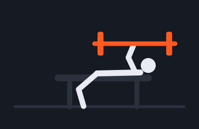

Bench Press
- Lie flat, feet planted, and grip the bar a little wider than your shoulders.
- Lower the bar slowly to the middle of your chest, keeping your elbows tucked at about 45 degrees.
- Press back up until your arms are straight, without bouncing the bar off your chest.